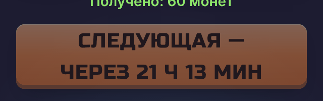
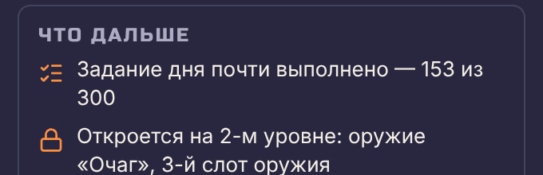
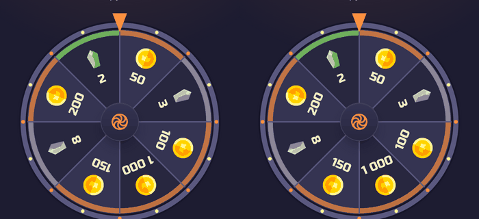
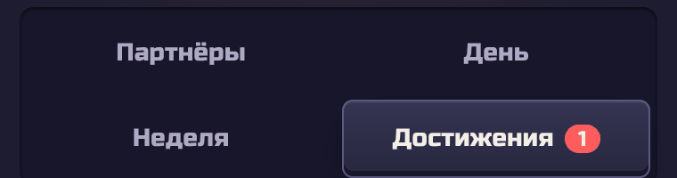
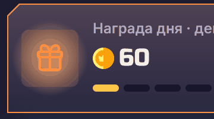
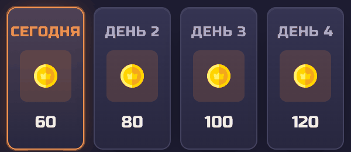
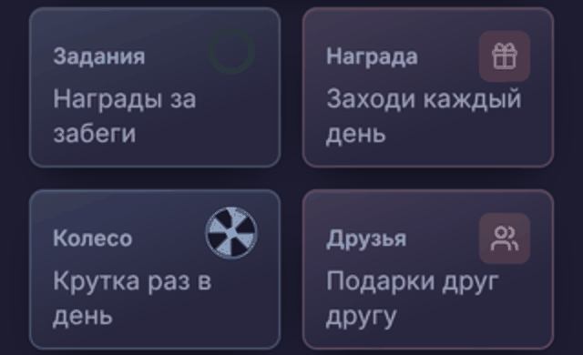
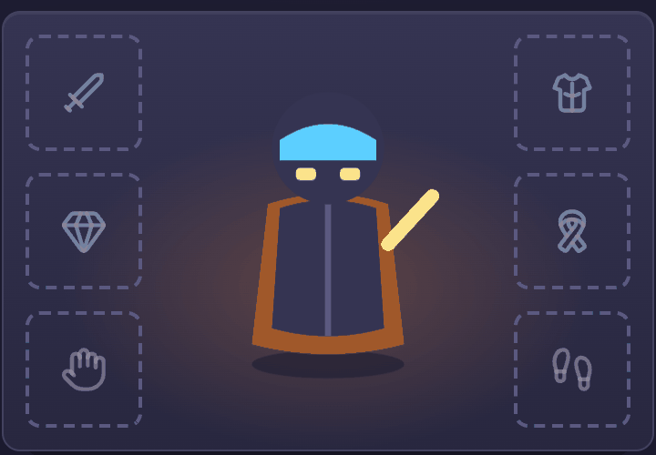
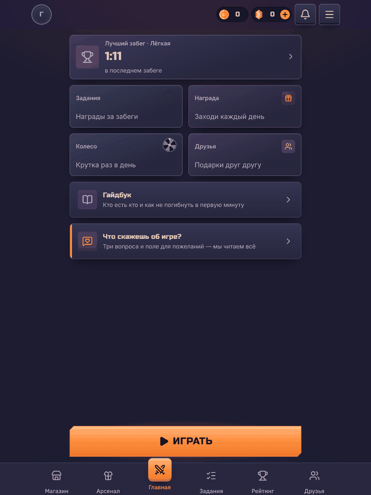

Находки аудита design/art/ui-ux.md с ID реестра design/art/registry.md. «Было» — скриншоты живой сборки dev с локальным бэкендом; «Предлагаю» — макеты на токенах «Сумеречного рубежа». Отмеченные «Сделано» уже исправлены кодом в этом PR.
«Следующая — через 19 ч / 44 мин»: хвост на новой строке читается как отдельное число. Правило переноса: отсчёт — одно слово, перенос допустим только после тире.
Перенос внутри отсчёта — между «ч» и числом минут.

Код: formatCountdown ставит неразрывные пробелы, перед тире — неразрывный пробел (daily.next, tasks.*.next).
Кнопка ожидания — не кнопка: подпись мелко, время крупно и одной строкой, без верхнего регистра. Неактивное состояние не прячется в цвет «главной» кнопки.

Число цели неразрывно (run.next.task.*). Дальше — мини-полоса прогресса справа вместо чисел в предложении.

Подписи секторов с серединой между 90° и 270° разворачиваются вокруг своей середины (labelUpsideDown).
Сетка — сознательное правило segmentedLayout (больше трёх — два столбца). Но две строки вкладок читаются как два переключателя: непонятно, к какой строке относится выбор, и экран теряет 50 px высоты.

Вкладки строкой с подчёркиванием, при нехватке места — горизонтальная прокрутка с видимым краем следующей вкладки. Сегменты остаются там, где их до трёх (сложность).

Круглое пятно за квадратной плиткой, плитка полупрозрачная — пятно просвечивает сквозь неё и мигает. Читается как грязь на экране.
Свечение — формой плитки и под ней, без мигания; плитка непрозрачная. Внимание держит кнопка «Забрать» и срезанный угол карточки — свечение лишь подсказывает.

Сегодняшний день отмечен рамкой и точкой, подпись — та же «День 1»: длина подписи одинакова у всех плиток, и номер дня не теряется.

text-wrap: balance у подписи плитки и тексты без предлога на конце строки. В WebView без поддержки balance строка просто переносится как сейчас — хуже не станет.

Тот же Хранитель, что в забеге (out/atlas-core.png): игрок видит, кого одевает. Надетый предмет — бирюзовой рамкой («своё снаряжение»). Позже — слой предмета поверх героя.

От 600 px — два столбца виджетов, «Играть» ограничена по ширине и стоит у нижнего края. Колонка 480 px остаётся телефонной раскладкой.
Только transform и opacity, длительности — токены движения. С prefers-reduced-motion — без анимации.
Число растёт с замедлением к концу. Итог — в подписи для экранного диктора, бегущие цифры от него скрыты: диктор не зачитывает промежуточные числа.